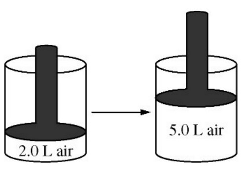

The volume of a sample of air in a cylinder with a movable piston is 2.0 L at a pressure \(P_1\), as shown in the diagram above. The volume is increased to 5.0 L as the temperature is held constant. The pressure of the air in the cylinder is now \(P2\). What effect do the volume and pressure changes have on the average kinetic energy of the molecules in the sample?